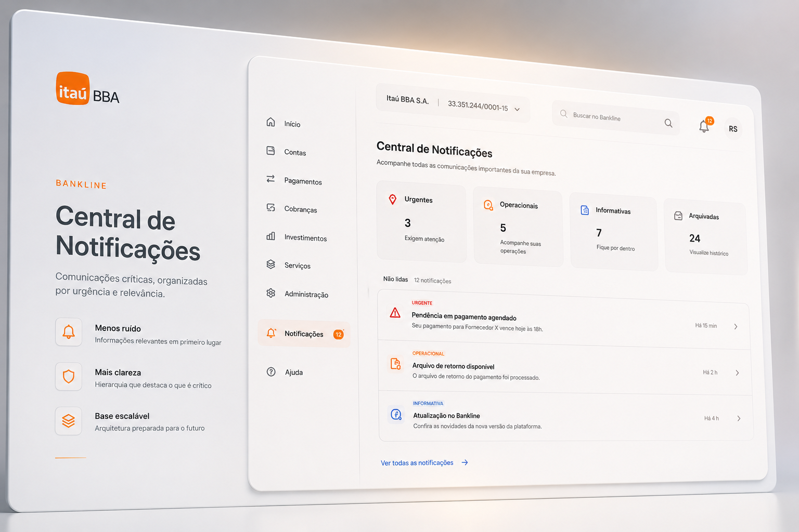

Bankline — internet banking corporativo do Itaú BBA

Confidencialidade: Por motivos de compliance, este estudo não exibe telas, dados ou fluxos reais da plataforma. As representações visuais são conceituais e abstratas — criadas para demonstração do processo de design. Nenhuma informação interna, funcionalidade real ou dado sigiloso do Itaú BBA é exibido.
O Bankline é a plataforma de internet banking corporativo do Itaú BBA. Avisos operacionais, atualizações e notificações críticas chegavam de forma fragmentada, sem hierarquia, dispersa por pontos diferentes da interface.
Comunicações críticas passavam despercebidas pelos usuários corporativos — gerando falhas operacionais nos clientes, aumento de chamados em atendimento e impacto financeiro direto nas áreas comercial e de operações do banco.
O problema não era falta de comunicação — o banco comunicava. O problema era que a comunicação não chegava. Notificações dispersas, sem hierarquia, em diferentes partes da interface criavam uma experiência fragmentada onde o importante se perdia no irrelevante.
Isso tinha um custo real: usuários corporativos tomavam decisões com informação incompleta, áreas de atendimento absorviam chamados evitáveis, e a confiança na plataforma como canal de comunicação era baixa.
Insights representativos das entrevistas com usuários corporativos e times internos. Dados anonimizados por confidencialidade.
"Às vezes eu nem sabia que tinha algum aviso. Só descobria quando o cliente já estava com problema."
"Preciso checar em vários lugares pra ter certeza que não perdi nada importante. É muito tempo perdido."
Estrutura de informação definida antes do design visual — categorias, hierarquia de urgência e estados de cada notificação.
Hub unificado com todas as notificações organizadas por categoria e urgência. O usuário corporativo tem pela primeira vez uma visão completa de tudo que precisa de atenção na plataforma.
Sistema de estados claro: não lida, urgente, arquivada. Cada tipo de notificação tem tratamento visual distinto para que a urgência seja perceptível sem necessidade de leitura completa.
Cada notificação tem um caminho claro de leitura e ação. O usuário consegue entender o contexto, decidir a resposta e agir sem sair da Central — reduzindo fricção e aumentando a taxa de resposta a comunicados críticos.
Sistema de filtros por categoria, período e status. Usuários corporativos que gerenciam múltiplos contratos e operações conseguem encontrar rapidamente a notificação que precisam sem scrollar por histórico irrelevante.
Documentação completa de componentes, estados e comportamentos para engenharia. A Central foi construída para ser escalável — novos tipos de notificação podem ser adicionados sem redesenho do sistema.
Quer entender melhor o processo ou discutir o case?